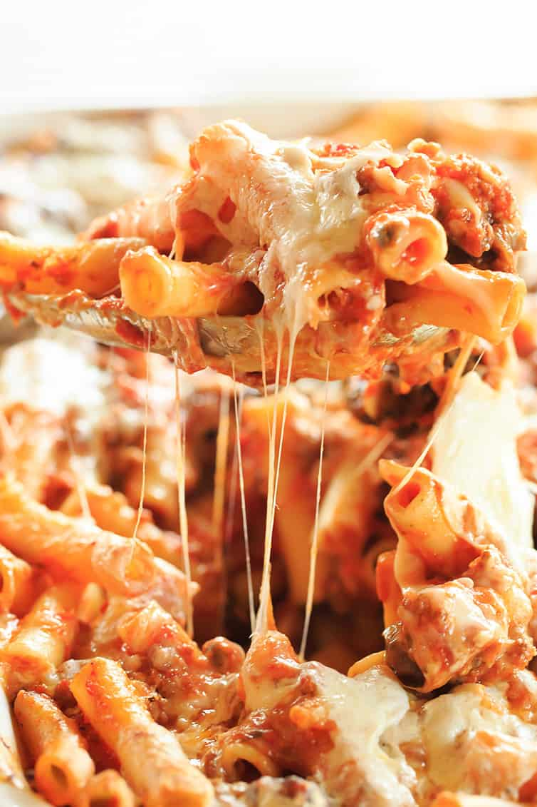

Baked Ziti

This Baked Ziti is absolutely delicious. It's quick and easy, too!
Baked Ziti is one of those easy casseroles that tastes like you’ve been cooking all day long but it’s surprisingly quick! Layers of tender ziti noodles, with a meaty zesty Italian sausage sauce and a cream creamy ricotta cheese layer. Top it all with a generous helping of mozzarella cheese and bake until bubbly. An amazing meal in about an hour!
Ingredients
- 1 pound dry ziti pasta
- 1 onion, chopped
- 1 pound lean ground beef
- 2 (26 ounce) jars spaghetti sauce
- 6 ounces provolone cheese, sliced
- 1 ½ cups sour cream
- 6 ounces mozzarella cheese, shredded
- 2 tablespoons grated Parmesan cheese
Directions
- Bring a large pot of lightly salted water to a boil. Add ziti pasta, and cook until al dente, about 8 minutes; drain.
- Meanwhile, brown ground beef and onion in a large skillet over medium heat; stir in spaghetti sauce and simmer for 15 minutes.
- Preheat the oven to 350 degrees F (175 degrees C). Butter a 9x13-inch baking dish.
- Spread 1/2 of the ziti in the bottom of the prepared dish; top with Provolone cheese, sour cream, 1/2 of the meat sauce, remaining ziti, mozzarella cheese, and remaining meat sauce. Top with grated Parmesan cheese.
- Bake in the preheated oven until heated through and cheeses have melted, about 30 minutes.